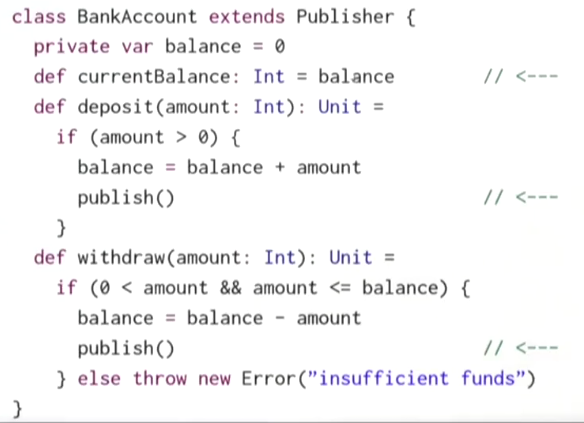
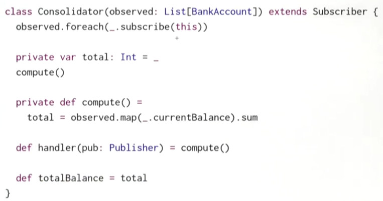
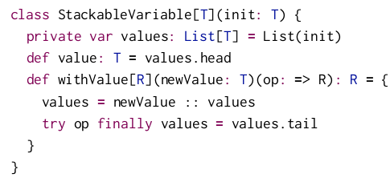
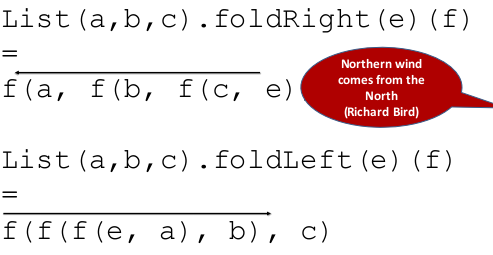
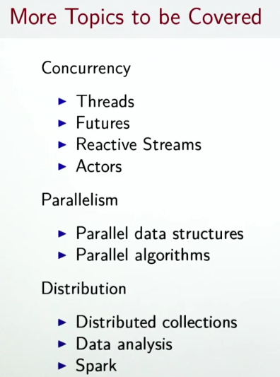

this week: discuss how to handle events in user-interface — MVC, functional reactive programming.
Lecture 4.1 - Imperative Event Handling: The Observer Pattern
Traditional way of handling events: observer Pattern (MVC). Used when views need to react to change in a model.
MVC: model-view-controller for user interface
- Views can announce themselves to a model (called "substribe")
- Models can "publish" new informations to views
trait Publisher{
private var subscribers: Set[Subscriber] = Set()
def subscribe(subscriber: Subscriber): Unit
def unsubscribe(subscriber: Subscriber): Unit
def publish(): Unit = subscribers.foreach(_.handler(this))
}
trait Substriber{
def handler(pub: Publisher)
}
make the BankAccount a Publisher:

create a Consolidator that displays bank accounts:

Advantages of MVC:
- decouples views from stat
- have varying number of views of a given state
- simple to set up
Disadvantages:
- forces imperative style since handlers are of Unit type
- many moving parts that need to be coordinated
- concurrency will be more complicated (ex. 2 models update one view at the same time)
- Views are tightly bound to one state, view updates immediately
Lecture 4.2 - Functional Reactive Programming
FRP:
- reactive programming: react to seq of events that happen in time.
- functional view: aggregate an event sequence to a signal.
In our simple API, the most important concept is Signal.
Signal:
- is a vlaue that changes over time
- represented as a function mapping time to value domain
- define new signals from existing ones (instead of having mutable state)
example: move mouse positions
event-based view:
whenever mouse moves, an event MouseMoved(toPos: Position) is fired
FRP view:
use a signal(function): mousePosition: Signal[Position] , which at any point represents a current mouse position
Signal opeartions
2 fundamental ops on signals:
- obtain value of signal at current time (the
applyfunction):mousePosition() - define a signal in term of another signal (constructor
Signal(expr))
example: from the mouse curve signal, define a new signal indicating whether the curve is inside the rectangle or not.
def inReactangle(LL: Position, UR: Position): Signal[Boolean] =
Signal{val pos = mousePosition() // the mouse pos signal
LL<= pos && pos <= UR}
use Signal(_value) to define a constant signal:
val sig = Signal(3) // constant signal
then define a subclass Var of Signal for changable signals, which has an update operation to redefine the value of a signal.
val sig = Var(3)
sig.update(5) // update
⇒ In scala, update is also a special function: assignments like a(e1,...en)=e are translated to a.update(e1...en, e). (Here the n could be 0, i.e. no arguments in the assignment expression).
→ So sig.update(5) can be re-written as sig()=5. The () is like dereferencing a varable.
Difference between
Vars and mutablevars: we can map over signals, i.e. maintain a relation between 2 signals forever in the future, whereas using mutablevars have to propagate all updates manually.
example: bank account
add a signal balance to BankAccounts, define a function consolidated which takes sum of all balances of accounts in list.
class BankAccount {
val balance = Var(0) // a Var signal
def deposit(amount: Int): Unit = if(amount>0){
val b = balance()
balance() = b + amount // otherwise cyclic definition of `balance`
}
def withdraw(amount: Int):Unit =
if(0<amount && amount<=balance()){
val b = balance()
balance() = b - amount
}else throw new Error("insufficient balance")
}
def consolidated(accts: List[BankAccount]):Signal[Int] =
Signal(accts.map(_.balance()).sum)
// similarly, define exange rate signals
def xchange = Signal(246.0)
def inDollar = Signal(c()*xchange)
note the difference between var assignment and signal update:
v = v+1: the new value is old value + 1s() = s() + 1: the s is a function that is always 1 larger than itself (cyclic definitions)
Lecture 4.3 - A Simple FRP Implementation
implementation of Singal and Var.
class API:
class Signal[T](expr: =>T){
def apply(): T = ??? // s() give cur value
}
object Signal{
def apply[T](expr: =>T) = new Signal(expr) // construct new signal
}
class Var[T](expr: =>T) extends Signal[T](expr){
def update(expr: =>T):Unit = ??? // s()=expr for update
}
object Var{
def apply[T](expr: =>T) = new Var(expr)
}
or more convientently:
- use
sig()get the signal's (current) value - use
sig() = {new_expr}to update the signal's expression
implemention idea
Signal
each sig: Signal[T] maintains:
-
its *current value *
private var myValue: T -
its *current expression *
private var myexpr: () => T -
set of observers : other signals (callersigs) that depend on
this.myValue— ifthis.myValuechanges, all signals in this.observers should be re-evaluatedprivate var observers: Set[Signal[_]] -
protected function to re-evaluate value
protected def computeValue(): Unit
- protected function to change expression
protected def update(expr: => T): Unit
How to record dependencies:
- when evaluating a
Signal, need to know whichcallersiggets defined bythis - So we should add the caller to
this.observerswhenapplyis called (like:sig()). - if
this.myValuechanges (when callingcomputeValue()), all caller signals inthis.observersare re-evaluated (callersig.computeValue()); andthis.observersis cleared(!! see next item). - when
callersigs re-evaluate their expression, theapply()method will add thecallersigagain tothis.observers
caller
How to find out who is calling so that a signal is evaluated ?
simplistic way: maintain a global data structure (stack-fashion) referring to current caller: StackableVariable[Signal[T]].
caller is a global "stack" of callersigs that get poped/pushed.
The API of the StackableVariable[Signal[T]] class:
caller.value: Signal[T]:
get the callersig on top of stack, which depends on currently evaluating signal (this), and so should be added to this.observers.
caller.withValue(sig:Signal[T])(expr: () => [T]):
first add sig to the top of stack; then evaluate expr; finally pop sig off the stack.
Here is the implementation of the caller :

- So whenever
sigwant to know who depends on it, it just usecaller.value;
thus, in the apply method of Signals, we write like this:
def apply() = {
observers += caller.value // caller.value=top of stack, it depends on currenlty-evaluating value (this), so it should be added to this.observers
assert(!caller.value.observers.contains(this), "cyclic signal definition")
myValue
}
- And if
sigwant to depend on other signals, in order to write the expression(which includes other signals that sig depends on), it use:caller.withValue(this){expr...}
so in computeValue(), as this.myExpr may contain other signals that this depend on, we should write:
protected def computeValue(): Unit = {
for (sig <- observed)
sig.observers -= this
observed = Nil
val newValue = caller.withValue(this)(myExpr()) // withValue will add this to the top of stack, so when eval other signals, they know that it's this signal that depends on them
if (myValue != newValue) { // re-evaluate all callersigs that depends on this
myValue = newValue
val obs = observers
observers = Set() // clear observers for this: the callersigs may be added back in apply()
obs.foreach(_.computeValue()) // here this.observers might be added with calersigs
}
}
problem: global stack is not good... especially for concurrency ⇒ replace global state by thread-local state.
Or use implicit parameteres: pass current value of the thread-local variable into a signal expr as implicit parameter.
Lecture 4.4/4.5 - Latency as an Effect
(I didn't quite get the point from this lecture on...)
when computation takes a lot of time: register a callback when computation terminates (either success or failure).
Future[T]: a monad that handles both exceptions and latency
trait Future[T] {
def onComplete(callback: Try[T] =>Unit): Unit
}
The callback use pattern matching:
ts match{
case Success(t) => onNext(t)
case Failure(e) => onError(e)
}
another option: give 2 callbacks, one for success, one for failure.
def onCompelet(success: T=>Unit, failed: Throwable => Unit): Unit
Lecture 4.6/4.7/4.8/4.9/4.10 - Combinators on Futures/Composing Futures
higher-order funcitons on Futures: map/filter/flatMap/...
recover/recoverWith for Error case ⇔ map/flatMap for Future.
fallbackTo:
retry: deal with failure...
turn recursion to foldleft/foldright...

Conclusion
- lazy evaluation: infinite data structure
- distinction between computations and values: random/signal are computations
- monads: abstract over properties of computations, encapsulate mutations, ...
mix FP and mutable state
- laziness
- FRP
- monads

exercice: calculator
Use Function Reactive Programming (FRP), with the Signal[A] class that you have seen in the lectures, to implement a spreadsheet-like calculator. In this calculator, cells can depend on the value of other cells, and are recomputed automatically when the latter change.
https://github.com/X-Wei/Coursera-progfun2/tree/master/hw4-calculator
Disqus 留言